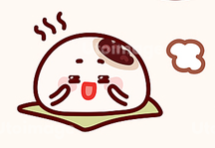

🍽️ 오늘 뭐 먹지? test 3.4몰라도 괜찮아요. 고르다 보면 찾아져요.
🔒 로그인하지 않으면 아무것도 저장하지 않아요. 로그인하면 내가 결정한 메뉴만 기록돼요. 개인정보 처리방침
끌리는 메뉴를 눌러 주세요. 고른 메뉴와 관련된 메뉴가 이어서 나와요.
칼로리는 1인분 기준 대략적인 값이에요. 식당과 양에 따라 달라질 수 있어요.
맛있게 드세요! 🍽️
로그인은 선택이에요. 로그인하면 내가 결정한 메뉴가 쌓이고, 내 취향에 맞춘 추천과 📒 내 기록을 볼 수 있어요.
🤖 AI가 본 내 취향
AI가 기록을 살펴보는 중…